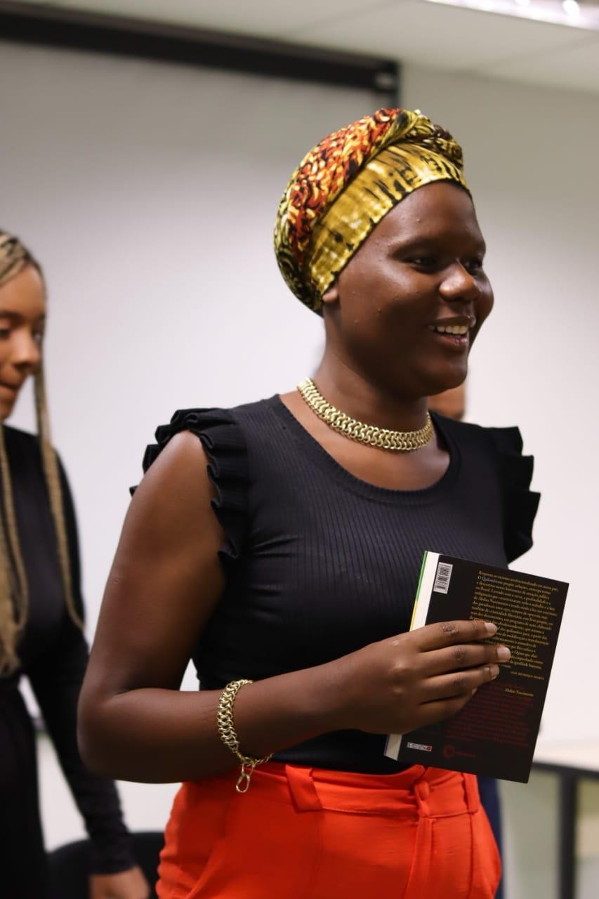
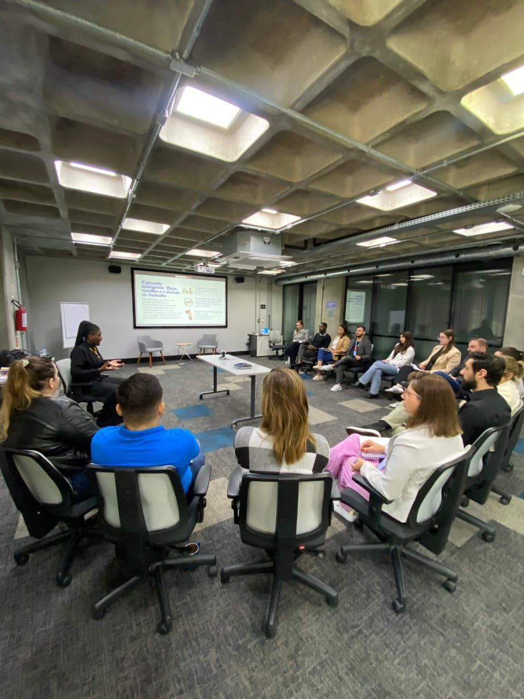
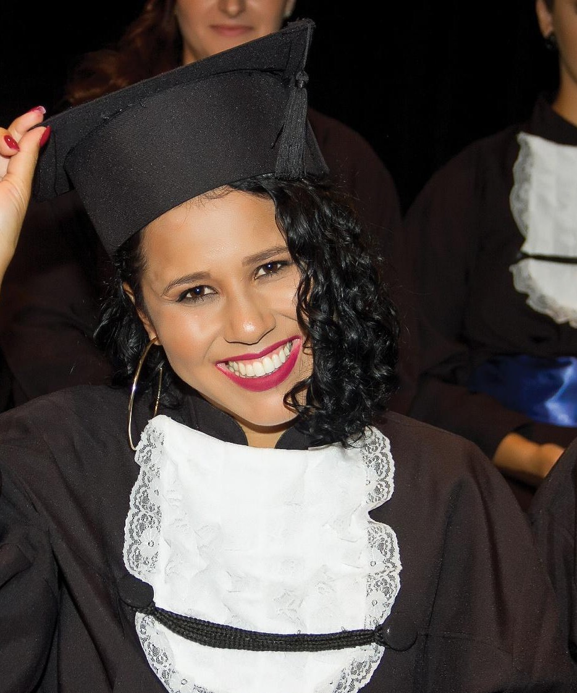
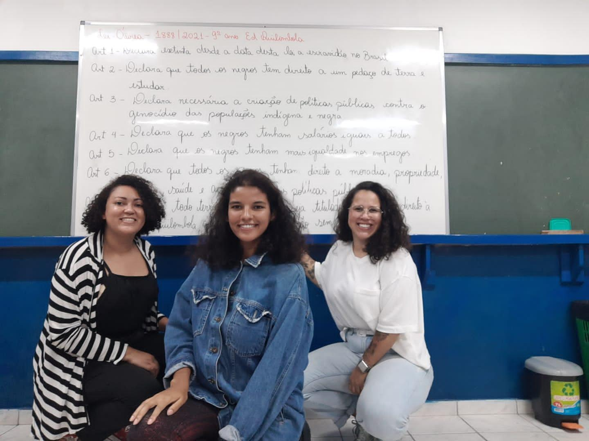

Portfólio completo da marca e das fundadoras Joyce Santos e Ticiane Caldas de Abreu — trajetórias de pesquisa, educação e atuação institucional em diversidade, equidade racial e direitos humanos.
"Onã" é uma palavra iorubá que significa caminho.
Acreditamos que trabalhar com diversidade exige mais do que campanhas pontuais ou ações isoladas. É necessário compreender como as desigualdades são produzidas, como aparecem nas relações institucionais e quais estratégias podem ser construídas para enfrentá-las. Por isso, a Onã trabalha a partir da conexão entre conhecimento, escuta, formação e ação — apoiando organizações na construção de ambientes mais diversos, equitativos, inclusivos e socialmente responsáveis, respeitando suas especificidades, seus desafios e seu momento institucional.
Onã é uma palavra iorubá que significa caminho. A escolha do nome encontra sentido na própria trajetória de suas fundadoras: Joyce Santos e Ticiane Caldas de Abreu construíram, cada uma a seu modo, um percurso entre universidade, pesquisa, atuação institucional e formação de pessoas — e decidiram caminhar juntas, transformando essas trajetórias individuais em uma consultoria.
“Onã significa caminho. E é nesse sentido que construímos nosso trabalho: caminhar junto às organizações para transformar diversidade em prática, equidade em compromisso e conhecimento em ação.” Joyce Santos & Ticiane Caldas de Abreu · Fundadoras da Onã

Assistente social · Pesquisadora · Consultora em diversidade, equidade e relações étnico-raciais
Assistente social, pesquisadora e consultora, com trajetória construída na articulação entre relações étnico-raciais, gênero, direitos humanos, trabalho, políticas públicas e formação profissional. Sua atuação é marcada pela combinação entre conhecimento acadêmico, experiência institucional e processos formativos, desenvolvidos em universidades, órgãos públicos, projetos de pesquisa e extensão, espaços de participação social e iniciativas voltadas à promoção da igualdade racial.
Mais do que acumular títulos e experiências, construiu uma forma de trabalhar: escutar antes de propor, compreender o contexto antes de intervir, traduzir conteúdos complexos sem perder sua profundidade e criar espaços de formação que façam sentido para quem participa.
Bacharel, mestra e atualmente doutoranda em Serviço Social pela Universidade Federal de Santa Catarina (UFSC), com formação acompanhada por uma trajetória de estudos e produções sobre racismo, gênero, trabalho, desigualdades sociais, políticas públicas e direitos humanos.
Início da trajetória na UFSC, construída a partir da articulação entre formação, pesquisa e participação em diferentes espaços de produção de conhecimento e intervenção social.
Aprovação em primeiro lugar no processo seletivo para o mestrado, na Linha 2 do Programa de Pós-Graduação em Serviço Social da UFSC.
Doutoranda em Serviço Social, mantendo a articulação entre pesquisa, atuação profissional e produção de conhecimentos comprometidos com os desafios concretos da sociedade brasileira.
Desde o início da graduação, a participação em projetos de ensino, pesquisa e extensão esteve vinculada a debates sobre relações étnico-raciais, gênero e direitos humanos. A inserção em projetos de extensão, grupos de estudos e espaços de debate possibilitou aproximar a formação acadêmica das questões presentes na realidade social, fortalecendo uma perspectiva crítica e interdisciplinar. Essa trajetória também envolveu a construção e realização de eventos, oficinas, congressos, seminários e cursos voltados à formação crítica.
Essa experiência fortaleceu competências que leva para a Onã: planejamento de atividades, curadoria de conteúdos, mediação de grupos, comunicação pública, elaboração de materiais e capacidade de transformar referências acadêmicas em linguagem acessível e aplicável.
Sua atuação é atravessada pela defesa dos direitos humanos e pelo compromisso com o enfrentamento do racismo e das desigualdades. Fez parte de coletivo de estudantes e profissionais negras e negros do Serviço Social, construindo atividades de formação e mobilização em torno das relações étnico-raciais, gênero e direitos humanos. Também realizou cursos complementares (online e presenciais) na área de direitos humanos e atuou na coordenação do Comitê de Assistentes Sociais no Combate ao Racismo do Conselho Regional de Serviço Social de Santa Catarina (CRESS/SC).
Entre 2022 e 2023, realizou estágio na Gerência de Políticas para Igualdade Racial e Imigração do Estado de Santa Catarina, experiência que aproximou sua formação acadêmica da formulação e implementação de políticas públicas. Posteriormente, realizou residência em Serviço Social no Ministério Público de Santa Catarina, ampliando sua experiência com instituições públicas, direitos humanos, análise de demandas e construção de respostas profissionais em contextos complexos.
Ministrou cursos, oficinas e palestras para empresas, instituições públicas e privadas, trabalhando temas relacionados a diversidade, relações étnico-raciais, gênero e direitos humanos. Em cada atividade, busca equilibrar conteúdo e experiência: apresentar fundamentos sólidos, provocar reflexão e oferecer ferramentas que possam ser utilizadas na prática.

Formação acadêmica sólida em Serviço Social, mestrado concluído e doutorado em andamento.
Experiência de pesquisa, extensão, formação e atuação institucional em relações étnico-raciais, gênero e direitos humanos.
Experiência em cursos, oficinas, palestras e processos formativos para públicos diversos.
Vivência em políticas públicas, instituições públicas e espaços profissionais do Serviço Social.
Capacidade de transformar conteúdos complexos em linguagem clara, crítica e conectada à realidade.
Experiência na produção de conhecimento, análise de contextos e construção de propostas fundamentadas.
“Minha formação em Serviço Social me ensinou a olhar para a realidade em sua totalidade. A pesquisa me ensinou a fazer perguntas. A experiência profissional me ensinou a construir respostas. E a formação de pessoas me ensinou que transformação também acontece quando conseguimos criar espaços seguros, críticos e potentes de aprendizagem.” — Joyce Santos

Historiadora · Pesquisadora · Educadora · Consultora em diversidade, equidade e relações étnico-raciais
Historiadora, mestra e doutoranda, também cursando Jornalismo — formação que amplia suas possibilidades de atuação na escrita, na comunicação pública e na tradução de conhecimentos complexos para diferentes públicos. Sua trajetória articula história, educação antirracista, relações étnico-raciais, gênero, direitos humanos, memória e políticas de permanência.
Mais do que reunir títulos e experiências, busca desenvolver uma atuação fundamentada na escuta atenta e no reconhecimento dos saberes produzidos por diferentes sujeitos, com especial atenção às mulheres negras e às comunidades tradicionais, procurando compreender as particularidades de cada contexto antes de propor caminhos.
Como pesquisadora, educadora e formadora, desenvolve cursos, oficinas, palestras, rodas de conversa, materiais pedagógicos e projetos que aproximam produção acadêmica, experiências sociais e transformação institucional.
História pela Universidade do Estado de Santa Catarina (UDESC).
História pela Pontifícia Universidade Católica de São Paulo (PUC-SP).
Doutoranda em História Social pela PUC-SP, investigando as trajetórias de professoras negras universitárias — produções intelectuais, práticas docentes e formas de militância antirracista, articulando raça, gênero e classe, e compreendendo a ancestralidade, a oralidade, a memória e o corpo como dimensões da produção de conhecimento.
Integra o Núcleo de Estudos da Mulher (NEM) e o Centro de Estudos Culturais Africanos e da Diáspora (CECAFRO), ambos vinculados à PUC-SP — espaços que fortalecem uma produção intelectual comprometida com a história das populações negras, o feminismo negro e a democratização da universidade.
Desde 2012, sua atuação no Projeto de Educação Popular Integrar, em Florianópolis, articula educação popular, acesso ao ensino superior, formação de professores e compromisso com estudantes de escolas públicas e territórios periféricos.
Sua trajetória na educação também inclui três anos e meio de atuação como professora na Educação Escolar Quilombola da rede estadual de Santa Catarina, período em que aprofundou práticas pedagógicas comprometidas com a história, a cultura, os saberes e as formas de existência das comunidades quilombolas.
Atuou ainda como educadora social no Projeto Pode Crer, desenvolvido pelo Instituto Padre Vilson Groh, e na Associação de Amigos da Casa da Criança e do Adolescente do Morro do Mocotó (ACAM). Desde 2013, integra a Gestão Estudantil Universitária Integrar (GESTUS), coletivo em que participa da construção de estratégias de permanência estudantil e da criação de espaços de acolhimento, leitura e diálogo — atuação junto a um público majoritariamente formado por mulheres negras e periféricas.

Desenvolve processos formativos destinados a estudantes, professores, educadores, coletivos, organizações e instituições, articulando referências históricas e conceituais, metodologias participativas, escuta e ferramentas incorporáveis às práticas cotidianas. Entre as ações que desenvolve, destacam-se:
Na DW! Semana de Design de São Paulo (2024), participou da pesquisa "Misericórdia e Algazarra", dedicada ao Largo da Misericórdia e à reconstrução histórica do Chafariz da Misericórdia — experiência que articulou memória negra, cidade, patrimônio e comunicação pública da história. Como pesquisadora e escritora, produz textos acadêmicos, ensaios, materiais pedagógicos e narrativas de memória, com trabalho apresentado no Seminário Internacional Fazendo Gênero e publicado em seus anais, além de texto publicado no Blogueiras Negras.
Formação sólida em História Social, estudos afrocentrados e pesquisa sobre mulheres negras, ciência e educação antirracista.
Experiência na criação e condução de cursos, oficinas, palestras, rodas de conversa e grupos de leitura.
Capacidade de analisar contextos, construir perguntas, sistematizar informações e fundamentar propostas.
Tradução de conceitos complexos em conteúdos claros, críticos, sensíveis e adequados a diferentes públicos.
Planejamento de programas formativos, seleção de referências e elaboração de materiais pedagógicos e comunicacionais.
Experiência com coletivos, universidade, educação popular e projetos institucionais, valorizando escuta, diálogo e construção compartilhada.
“Não proponho soluções prontas e desconectadas da realidade. Construo percursos com diagnóstico, escuta, conteúdo consistente e estratégias possíveis de aplicação, respeitando a história, os desafios e as potencialidades de cada grupo ou organização.” — Ticiane Caldas de Abreu
Seis frentes que combinam pesquisa, formação e atuação institucional para transformar diversidade em prática.
Diagnóstico institucional e construção de estratégias sob medida para avançar em equidade racial, de gênero e social.
Processos formativos participativos para lideranças, equipes, educadores e coletivos, unindo conteúdo, escuta e ferramentas aplicáveis.
Levantamento, sistematização e tradução de referências acadêmicas em materiais claros e aplicáveis.
Condução de rodas de conversa, grupos de leitura e encontros que criam espaços seguros de escuta e aprendizagem.
Construção de políticas, fluxos e materiais internos alinhados a uma cultura organizacional mais ética e diversa.
Pesquisa histórica e curadoria de conteúdo aplicadas a projetos de comunicação, memória e patrimônio cultural.
Conte um pouco sobre sua instituição e o que você busca — Joyce e Ticiane retornam o contato em até 2 dias úteis.
Dados de contato de exemplo do material de identidade visual — atualize com as informações reais antes de publicar.